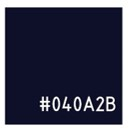
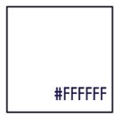
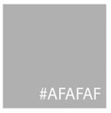
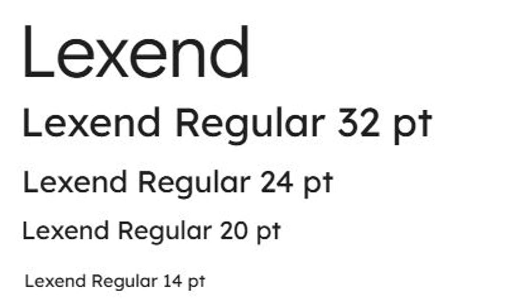
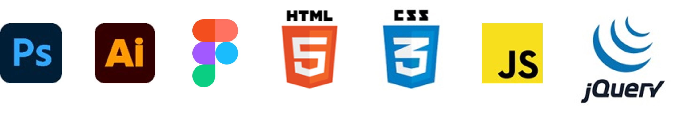

프로젝트진행자 : 성아인
기획의도
관리되지 않은 홈페이지나 비효율적인 접근성때문에 이용하기 불편하여 전체적인 UI/UX 개선이 필요하고, 트렌드에 맞지 않은 오래된 디자인은 브랜드 자체의 이미지에도 부정적인 영향을 준다. 고객이 좀 더 접근하기 쉽고 쇼핑을 더 하고싶게 만드는 웹을 제공하고 싶어 계획하였다.
Concept
모바일에 익숙하지 않은 주 소비자 연령층에 맞게 쉽게 찾을 수 있고 구매할 수 있도록 불필요한 요소들은 덜고, 사용하기 편리한 버튼들을 추가해 사용자 편리성에 맞춘 깔끔한 디자인으로 개선
COLOR
메인 색상으로 기존부터 사용하던 에스티로더의 로고 색상인 네이비와 화이트에 옅은 회색을 추가해 모던함과 고급스러움을 동시에 주도록 함



FONT

SKILL
